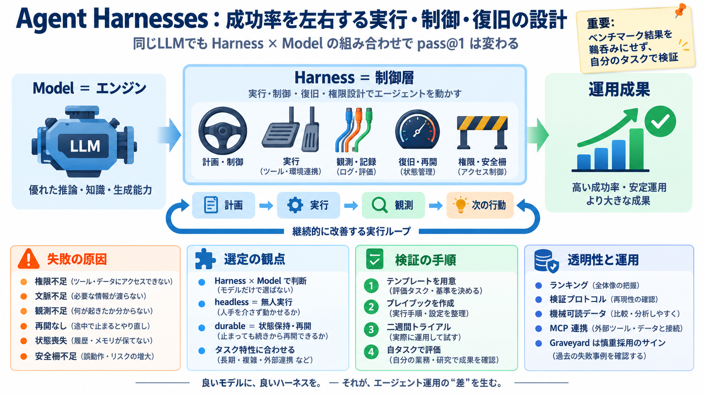

Designing MCP for the Age of AI Agents
-- Key Takeaways: The Harness MCP server is an MCP-compatible interface that lets AI agents discover, query, and act o…

-- Key Takeaways: The Harness MCP server is an MCP-compatible interface that lets AI agents discover, query, and act o…
Architect, implement, and maintain scalable backend services and APIs using Python (FastAPI, Flask, Django) to support A…
The Model Context Protocol (MCP) is an open standard for connecting AI agents to external systems. Connecting agents to …
[10:53] is just a quick example but as you can imagine you can connect multiple different MCP servers to your agent. So …
| Capability | Package | What it does | --- | MCP | Core | Connect any MCP server's tools; local by default, provider-…